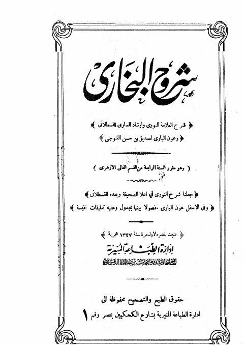

Downloads need an internet connection.
شروح البخاري شرح العلامة النووي وإرشاد الساري للقسطلاني وعون الباري لصديق حسن القنوجي
Authors: يحيى بن شرف النووي أحمد بن محمد القسطلاني
Publishers: إدارة الطباعة المنيرية
**▫️ العنوان: شروح البخاري شرح العلامة النووي وإرشاد الساري للقسطلاني وعون الباري لصديق حسن القنوجي** ▪️ المؤلف: #يحيى_بن_شرف_النووي • #أحمد_بن_محمد_القسطلاني ▫️ الناشر: #إدارة_الطباعة_المنيرية ▪️ تاريخ النشر: 1347هـ ▫️ بلد النشر: القاهرة، #مصر ▪️ الطبعة: 1 ▫️ عدد الأجزاء: 1 ▪️ الصفحات: 280 ▫️ نوع الوعاء: #كتاب ▪️ التصنيف الرئيسي: #الحديث_وعلومه ▫️ التصنيف الفرعي: #الكتب_الستة ۪